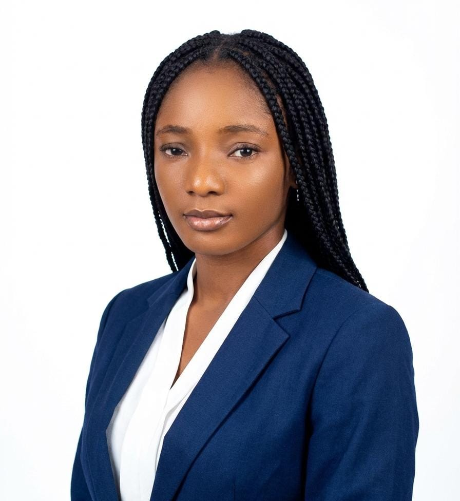

BENEDICTA OCHANYA JOHN

Professional Summary
Passionate and adaptable professional with a background in Nutrition, Public Service, and Customer Relations. I specialize in providing high-level administrative support and nutrition counseling with a focus on team contribution and operational excellence. Known for being a quick learner who thrives in fast-paced, community-focused environments.
Technical Skills
Administration:
Virtual Assistance, IT Support, Project Coordination.Media & Communication:
Social Media Management, Content Creation.Specialized Knowledge:
Clinical Nutrition, Public Health Education, Quality Testing.
Education
National Diploma | Nutrition & Dietetics – Federal Polytechnic Kaduna (2018 – 2020)
Higher National Diploma (HND) | Nutrition & Dietetics – Federal Polytechnic Kaduna (2021 – 2024)
Work Experience
Intern | Primary Healthcare Romi Sept 2019 – Dec 2019
Clinical Counseling:
Provided nutrition education and dietary counseling to patients.Community Health:
Supported maternal and infant feeding (MIYCF) services and child growth monitoring.Immunization Support:
Participated in infant immunization programs to improve community health outcomes.
Waitress | Dome Suite, Nigeria April 2024 – May 2025
Service Excellence:
Selected to serve high-profile VIP clientele, including government officials and international guests.Cultural Competence:
Maintained exceptional service standards and cultural sensitivity for diverse international visitors.Award:
Recognized as "Best Customer Service Staff of the Year."
NYSC | Standards Organization of Nigeria (SON) June 2025 – Present
Quality Assurance:
Supporting product inspections and ensuring compliance with national standards.Analytical Reporting:
Preparing accurate test analysis reports and maintaining detailed technical documentation.Market Surveillance:
Assisting in certification processes and field surveillance operations.
My Hobbies
Contact Me